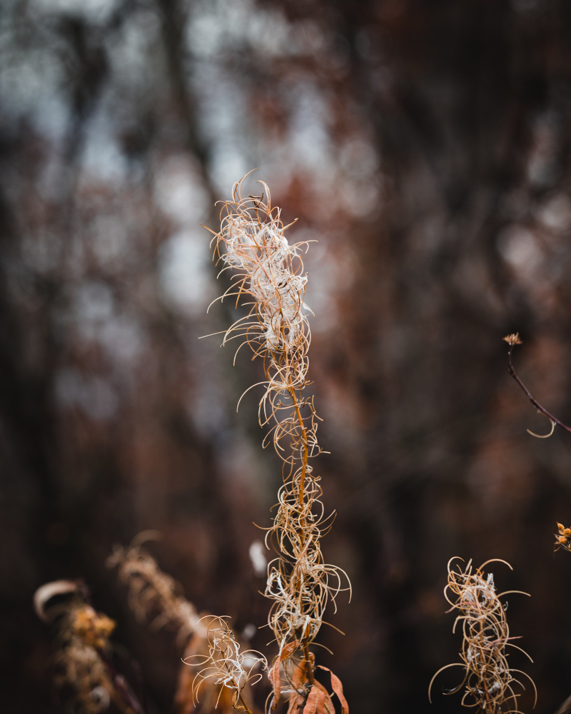
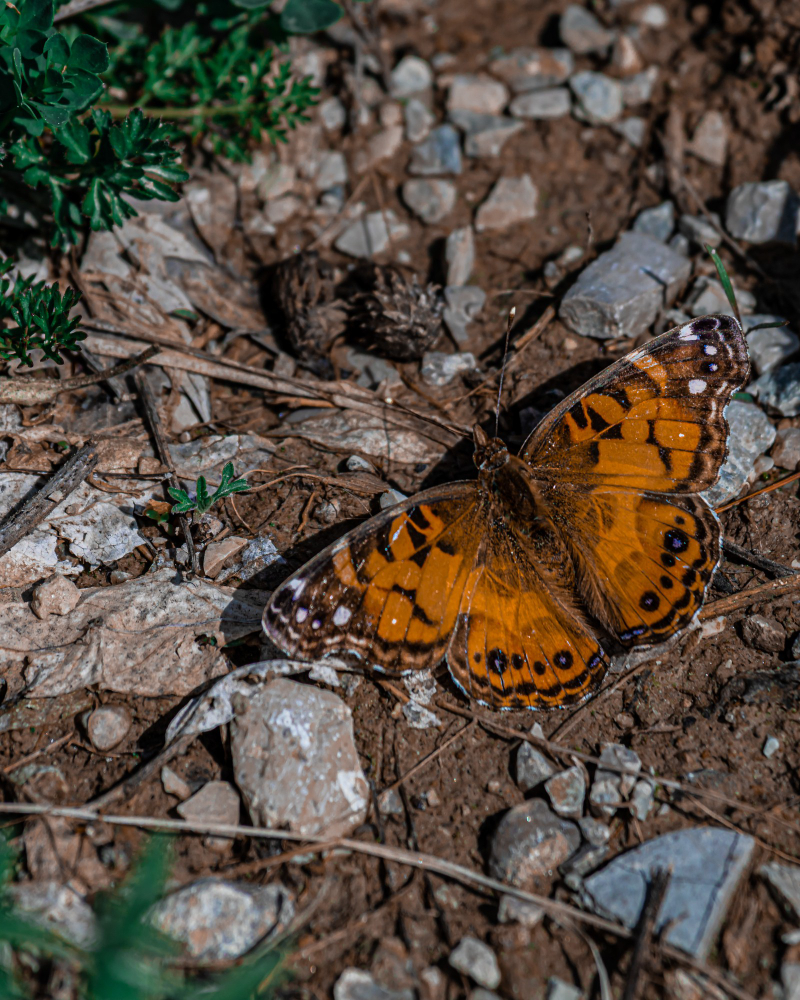
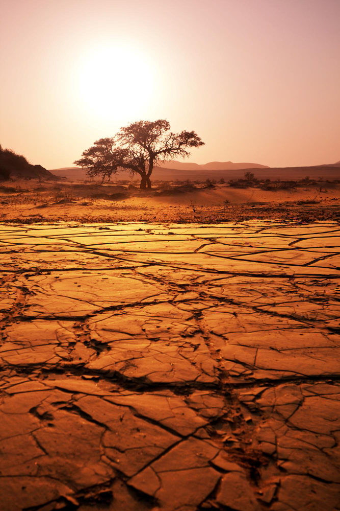
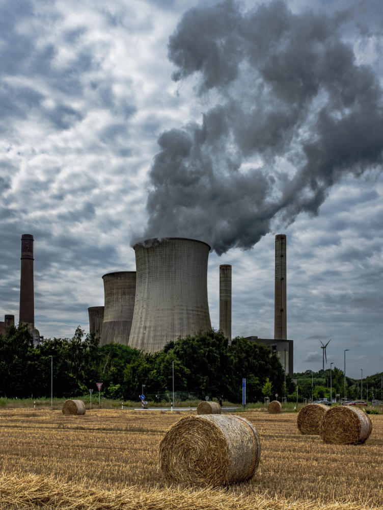
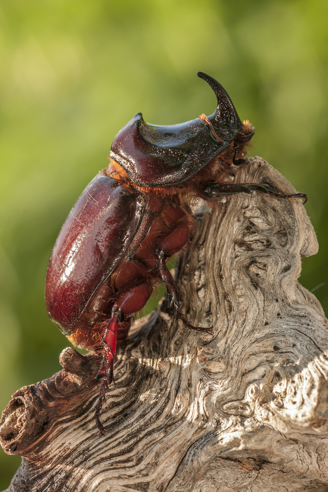

Habitat Loss And Fragmentation
Butterflies require specific habitats to survive, such as meadows, grasslands, and forests. However, these habitats are being destroyed and fragmented due to human activities such as agriculture, urbanization, and deforestation. This loss of habitat has a significant impact on butterfly populations because it limits their ability to find food, shelter, and mates.

Pesticides
The use of pesticides and other chemicals in agriculture and industry can have a negative impact on butterfly populations by reducing the availability of food and habitat, and by directly poisoning butterflies.

Disease
Finally, disease can also contribute to declines in butterfly populations. Some diseases can be spread by humans or other animals, while others may be caused by environmental factors such as pollution or climate change.

Climate Change
Climate change is altering the temperature and precipitation patterns of many regions, which affects the timing of plant growth and the availability of nectar and pollen for butterflies. In addition, climate change is causing shifts in the geographic range of many butterfly species, which can lead to a loss of genetic diversity and reduced population sizes.

Air pollution
Air pollution, especially from vehicle emissions and industrial activities, can harm butterflies by damaging their respiratory systems, reducing their ability to fly and reproduce.
